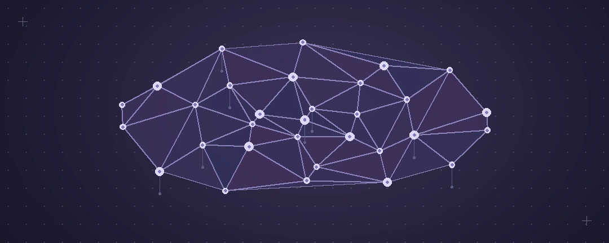
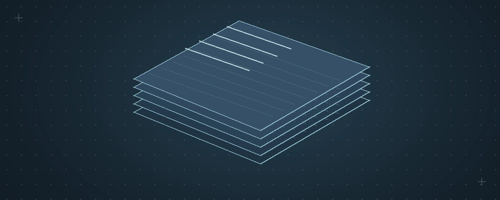
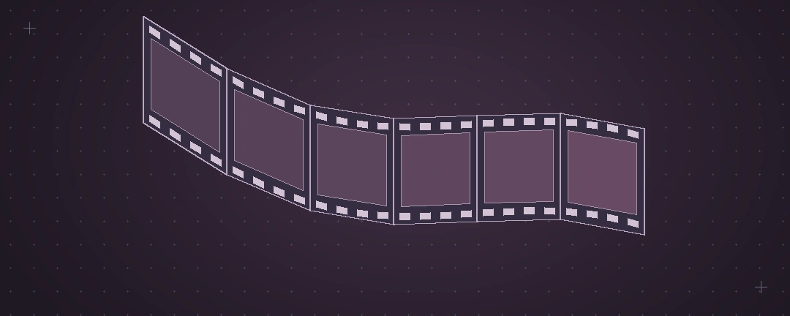
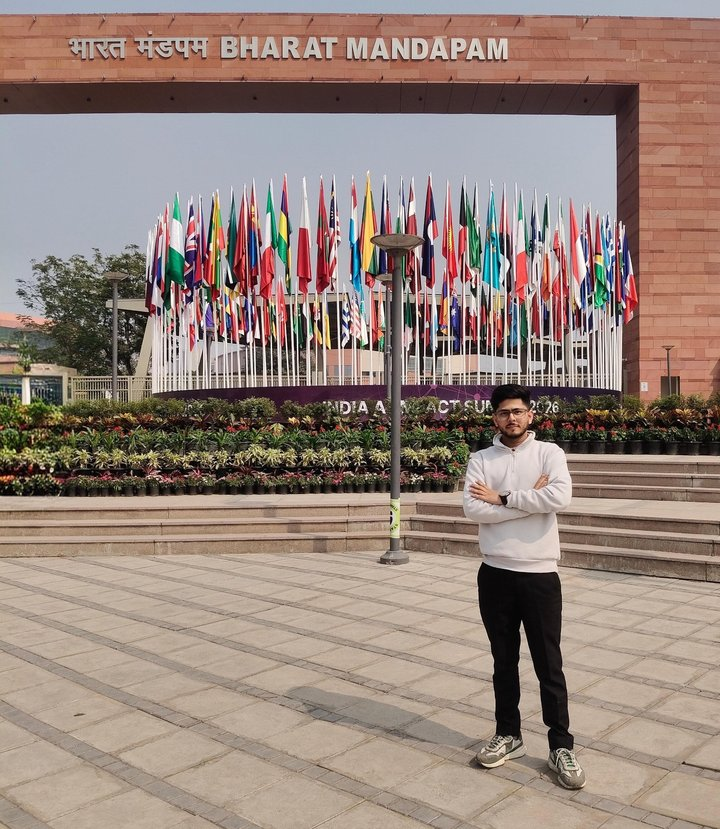

JaalNetra
I worked with the Kavach 2023 national finalist team on mesh network app detection. I later repaired the public project site, which hosts our documentation and screenshots.
View project materialsLucknow, India
Software development, applied AI and digital operations.
I’m pursuing an M.Tech in Computer Science and work across software projects, applied research and digital operations for a local business.
Engineering

I worked with the Kavach 2023 national finalist team on mesh network app detection. I later repaired the public project site, which hosts our documentation and screenshots.
View project materials
I organised the M.Tech Computer Science syllabus into a semester-by-semester study site, with subject pages, notes and links to course materials.
Visit course site
I maintain a fork of a movie-browsing frontend. I updated the app configuration and added tests for the catalogue and sign-in setup.
View fork on GitHubI explored resource allocation for a Ministry of Steel supply-chain problem in the Smart India Hackathon, and machine learning classification for Parkinson’s and heart disease prediction.
My current research explores applied machine learning for privacy-conscious security applications, with an interest in how detection can work directly on a user’s device.
I’m planning a visual simulation of how devices connect and relay messages across a mesh network.
Zeva Makeup Studio · Lucknow, India
I began working with the studio under its former name, MakeOver by Zeva.
Era University, Lucknow
Siemens Healthineers, Lucknow
RailTel Corporation of India · InternPe
Websites, print materials and documents for individuals and businesses.
I’m pursuing an M.Tech in Computer Science at the Centre for Advanced Studies, AKTU, after a B.Tech in Computer Science & Artificial Intelligence at Amity University.
My interests include applied machine learning, cybersecurity, privacy-conscious computing and software development.
Python · SQL · React · Java · Google Cloud · DevOps

These links open the provider’s course or programme page.
For engineering opportunities, research conversations or freelance enquiries, email me directly.